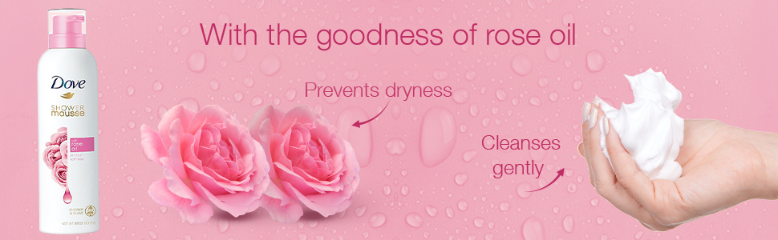
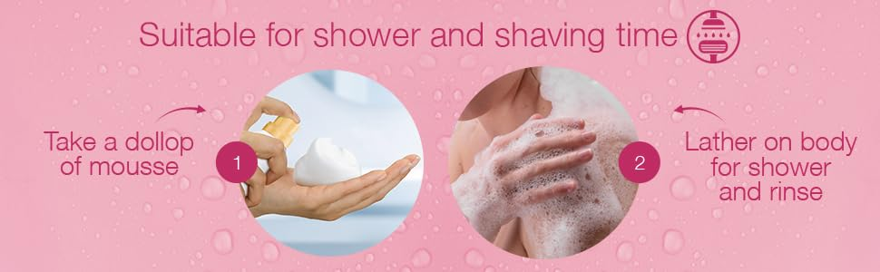
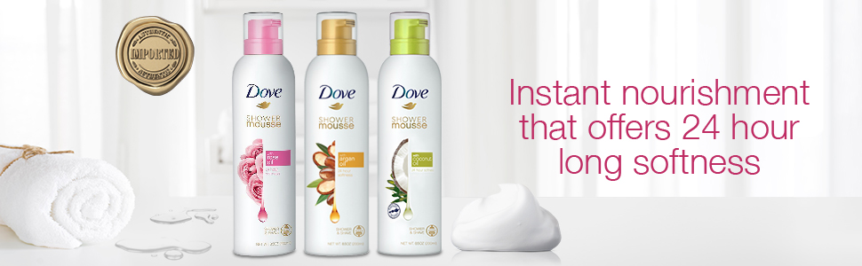

3K+ bought in past month
Brand Dove
Item Weight 1236 Grams
Item dimensions 15.9 x 10.6 x 19 Centimeters
Scent Rose
Age Range Adult
Skin Type All
Item Quantity 1
Special Feature Sulfate Free
Item Form Cream
Product Benefits Cleansing,Nourishing
In Stock Ships from : beautyproducts Sold by : RK World Infocom Pvt Ltd
-25% ₹280
M.R.P : ₹375.00
Inclusive of all taxes
EMI starts at ₹97 per month.Offers: Offers avaliable : Buy 2 Get 1 free , Buy 3 get 3%, Buy 4 Get 4%, Buy 5 Get 5%.
Product description
  